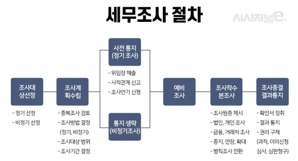
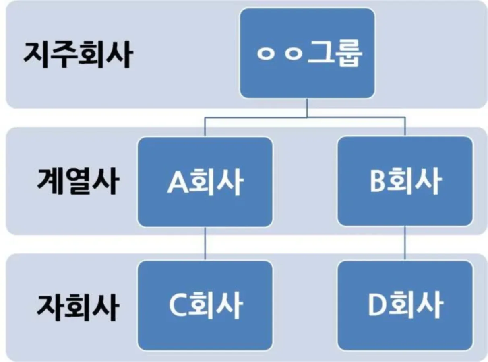
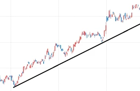

XII. 부당행위계산부인

고기와 빵을 음미하며 탈세를 색출해내는 1996년생 박효빈 시장
"지인끼리 짜고 치며 세금 빼돌리는 수작, 내 데이터 분석망을 피할 수 있을 거라 생각했나? 효빈광역시의 조세 정의는 내가 지킨다."
- 공기업 프리패스의 전설이자 효빈대학교 회계학과 A+ 폭격기 출신, 1996년생 박효빈 시장이 위키를 만들며 남긴 명언.
- 공기업 프리패스의 전설이자 효빈대학교 회계학과 A+ 폭격기 출신, 1996년생 박효빈 시장이 위키를 만들며 남긴 명언.
목차
- 1. 개요
- 2. 부당행위계산부인의 적용요건
- 2.1. 요건
- 2.2. 특수관계인 (쌍방관계)
- 3. 지배적 영향력의 판단 기준
1. 개요
[원문 이론 100% 보존]
국내서 법인세 납세의무가 있는 법인이 그 후 특수관계인과 거래함으로서 그 법인의 소득에 대한 조세 부담을 부당히 감소시킨 것으로 인정시, 과세관청은 법인의 행위 또는 소득금액의 계산에 불구하고 이를 부인해 그 법인의 각 사업연도의 소득금액을 계산 가능한 규정.
국내서 법인세 납세의무가 있는 법인이 그 후 특수관계인과 거래함으로서 그 법인의 소득에 대한 조세 부담을 부당히 감소시킨 것으로 인정시, 과세관청은 법인의 행위 또는 소득금액의 계산에 불구하고 이를 부인해 그 법인의 각 사업연도의 소득금액을 계산 가능한 규정.
쉽게 말해 "가족이나 친한 지인들(특수관계인)끼리 짜고 치는 고스톱으로 세금을 삥땅 치려는 수작을 원천 차단하겠다"는 국가의 강력한 의지다. 자본주의 사회에서 남남끼리 손해 보고 장사하는 경우는 없지만, 피가 섞였거나 끈끈한 지배 관계가 얽혀있다면 건물주 아버지가 아들 회사에 건물을 시세의 10분의 1로 후려쳐서 넘기는 미친 짓이 가능해지기 때문이다. 국가(국세청) 입장에서는 조세가 탈루되는 꼴을 절대 두고 보지 않으며, 거래 자체를 '부인(Deny)'해버리고 정상 시가(Market Price)대로 세금을 강제 재계산해버린다.

효빈시 1호선의 고나미 기관사가 자신이 운영하는 철도 굿즈 법인의 수익을 숨기기 위해, 동생 명의로 세운 유령 회사에 한정판 굿즈를 '100원'에 몽땅 넘겼다고 치자. 과세관청은 "장난하냐?"라며 이 거래 자체를 '부인(Deny)'하고 시가인 '100만 원'에 판 것으로 강제로 소득금액을 재계산하여 법인세를 징수한다.
2. 부당행위계산부인의 적용요건
(1) 요건
[원문 이론 100% 보존]
1) 특수관계인과의 거래
2) 당해 법인의 부당한 행위 • 계산으로 조세부담이 감소된 것으로 인정 필요
1) 특수관계인과의 거래
2) 당해 법인의 부당한 행위 • 계산으로 조세부담이 감소된 것으로 인정 필요
효빈시 최고의 랜드마크인 아논타워의 소유주 법인이, 대표이사의 친동생이 운영하는 페이퍼 컴퍼니에 아논타워 스위트룸 사무실을 월세 '10,000원'에 빌려줬다고 가정해보자.
1) 특수관계인과의 거래인가? 대표이사의 친동생 법인이므로 당연히 (O).
2) 조세부담이 감소했는가? 월세 1억 원을 받아야 할 걸 1만 원만 받았으니, 소유주 법인의 수익(익금)이 줄어들어 낼 법인세가 부당하게 확 줄었다. 따라서 (O).
➔ 두 가지 요건을 모두 충족했으므로 이 거래는 가차 없이 '부당행위계산부인' 대상이다.
(2) 특수관계인
[원문 이론 100% 보존]
법인세법상 특수관계인의 범위는 당해 법인과 다음 중 어느 하나의 관계에 있는 자, 그 쌍방관계가 각각 특수관계인으로 함.
쌍방관계: 어느 일방을 기준으로 특수관계에 해당하기만 하면 이들 상호간은 특수관계인 해당.
1) 임원의 임면권행사, 사업방침결정 등 당해 법인의 경영에 대해 사실상 영향력을 행사한다고 인정되는 자와 그 친족
2) 주주 등(소액주주 등은 제외)과 그 친족
3) 법인의 임원 • 직원 또는 주주 등의 직원(비소액주주등이 영리법인인 경우에는 그 임원을, 비영리법인인 경우에는 그 이사 및 설립자를 말한다)이나 법인 또는 주주 등의 금전 기타 자산에 의해 생계를 유지하는 자와 이들과 생계를 함께하는 친족
4) 해당 법인이 직접 또는 그와 1부터 3까지의 관계에 있는 자를 통해 어느 법인의 경영에 대해 지배적 영향력*을 행사 시 그 법인
5) 해당 법인이 직접 또는 그와 1부터 4까지의 관계에 있는 자를 통해 어느 법인의 경영에 대해 지배적 영향력* 행사 시 그 법인
6) 당해 법인에 100분의 30 이상을 출자하고 있는 법인에 100분의 30 이상을 출자하고 있는 법인이나 개인
7) 당해 법인이 「독점규제 및 공정거래에 관한 법률」에 의한 기업집단에 속한 법인인 경우 그 기업집단에 소속된 다른 계열회사 및 그 계열회사의 임원
법인세법상 특수관계인의 범위는 당해 법인과 다음 중 어느 하나의 관계에 있는 자, 그 쌍방관계가 각각 특수관계인으로 함.
쌍방관계: 어느 일방을 기준으로 특수관계에 해당하기만 하면 이들 상호간은 특수관계인 해당.
1) 임원의 임면권행사, 사업방침결정 등 당해 법인의 경영에 대해 사실상 영향력을 행사한다고 인정되는 자와 그 친족
2) 주주 등(소액주주 등은 제외)과 그 친족
3) 법인의 임원 • 직원 또는 주주 등의 직원(비소액주주등이 영리법인인 경우에는 그 임원을, 비영리법인인 경우에는 그 이사 및 설립자를 말한다)이나 법인 또는 주주 등의 금전 기타 자산에 의해 생계를 유지하는 자와 이들과 생계를 함께하는 친족
4) 해당 법인이 직접 또는 그와 1부터 3까지의 관계에 있는 자를 통해 어느 법인의 경영에 대해 지배적 영향력*을 행사 시 그 법인
5) 해당 법인이 직접 또는 그와 1부터 4까지의 관계에 있는 자를 통해 어느 법인의 경영에 대해 지배적 영향력* 행사 시 그 법인
6) 당해 법인에 100분의 30 이상을 출자하고 있는 법인에 100분의 30 이상을 출자하고 있는 법인이나 개인
7) 당해 법인이 「독점규제 및 공정거래에 관한 법률」에 의한 기업집단에 속한 법인인 경우 그 기업집단에 소속된 다른 계열회사 및 그 계열회사의 임원
[절대 주의] 쌍방관계의 무서움!
'어느 일방'만 특수관계 기준에 걸려도 서로가 특수관계인으로 묶이는 쌍방 지옥이다. A법인 입장에서 B가 특수관계인이라면, B가 "난 쟤랑 안 친한데요?"라고 발뺌해봐야 소용없다. 국세청 시스템 앞에서는 빼도 박도 못하게 특수관계인으로 묶여 거래 내역이 탈탈 털린다.
'어느 일방'만 특수관계 기준에 걸려도 서로가 특수관계인으로 묶이는 쌍방 지옥이다. A법인 입장에서 B가 특수관계인이라면, B가 "난 쟤랑 안 친한데요?"라고 발뺌해봐야 소용없다. 국세청 시스템 앞에서는 빼도 박도 못하게 특수관계인으로 묶여 거래 내역이 탈탈 털린다.
캐릭터로 알아보는 7가지 특수관계인 유형 완벽 해부
-
1) 경영 사실상 영향력 행사자 (배후 실세):

공식 직함은 없지만 사실상 회사를 쥐락펴락하는 배후 조종자. 예를 들어, 4호선 컬러의 토야마 카스미가 밴드 기획사에 지분은 없어도 "이 곡으로 데뷔 안 하면 별 모양 기타 다 부숴버릴 거야!"라고 으름장을 놓아 사업방침을 사실상 결정하고 있다면, 카스미와 그 친족들은 모두 그 기획사의 특수관계인이다. -
2) 주주(소액주주 제외)와 그 친족 (대주주 패밀리):

5호선 컬러 미타케 란의 아버지가 효빈공단 대형 화훼 법인의 지분을 50% 들고 있는 대주주라면? 아버지는 당연하고, 그 친족인 란까지 모조리 특수관계인이다. 란이 연습실 명목으로 화훼 법인 건물을 헐값에 빌려 쓰면 부당행위계산부인 뚝배기가 깨진다. -
3) 임원/직원 및 '생계유지자':

"금전 기타 자산에 의해 생계를 유지하는 자"란, 스스로 돈을 못 벌고 빌붙어 사는 사람을 뜻한다. 7호선 마스코트 임세정(언니)이 벌어오는 월급으로 매일 납땜용 인두기를 사며 기생하는 동생 임세하가 대표적이다. 언니 회사 물건을 세하에게 공짜로 주면? 빼도 박도 못하는 특수관계인 간 부당행위다. -
4) 1~3번을 통해 지배적 영향력을 행사하는 법인 (1단계 지배):
대주주 란(2번 요건)이 지배력을 행사하는 또 다른 법인 B가 있다면, 본래 법인 A와 법인 B는 특수관계에 놓인다. -
5) 1~4번을 통해 지배적 영향력을 행사하는 법인 (2단계 지배 꼬리물기):

법인 A ➔ 지배 ➔ 법인 B ➔ 지배 ➔ 법인 C일 때, A와 C도 특수관계인이다.이쯤 되면 그냥 효빈시 상권 다 해 먹는 거다. -
6) 30% 출자 ➔ 30% 출자 (손자회사격 출자관계):

A법인에 30%를 출자한 모회사가 있고, 그 모회사가 또 다른 B법인에 30%를 출자했다면? A법인과 B법인은 자매회사격으로 엮여서 특수관계인이 된다. 3호선 박라미가 투자한 빵집 법인과 카페 법인이 서로 재료를 원가 이하로 넘기면 철퇴를 맞는다. -
7) 독점규제법상 기업집단(재벌 계열사):

6호선 컬러 미나토 유키나가 정점에 군림하는 '로젤리아 재벌 그룹'이 있다고 치자. 이 거대 기업집단에 소속된 음반 제작사, 공연 기획사, 굿즈 판매사는 모두 한 지붕 아래 식구이므로 당연히 상호 간 특수관계인이다.
"키라키라 도키도키! 우리 포핀파파티 기획사(법인) 수익이 너무 많이 났네? 세금 많이 내기 싫으니까, 내 여동생 아스카한테 기획사 명의의 별 모양 기타 100대를 1대당 '100원'에 팔아버리고 매출을 줄여야지~! 우리는 찐 자매니까 서로 모른 척하면 세무서도 모를 거야, 그치?"
"흥. 난 100원 따위 쩨쩨하게 안 놀아. 우리 아빠가 대주주로 운영하는 효빈공단 화훼 법인에 내 개인 연습실을 시세보다 50배 비싸게 팔아먹을래. 아빠 회사 비용 처리도 팍팍 늘어나고 내 주머니도 두둑해지고, 이게 바로 '평소대로'의 완벽한 절세 전략 아니겠어?"
"카스미, 그리고 란. 당신들은 영원히 국세청의 데이터 분석망을 벗어날 수 없을 거야. 대주주의 친족(제2호 요건)인 당신들이 법인과 거래한 그 얼빠진 행위들은 모두 조세부담을 부당하게 감소시킨 것으로 간주되어 '부당행위계산부인'의 직격탄을 맞게 된다. 정상 시가와의 차액만큼 모두 법인의 익금으로 산입되고 소득 처분(상여, 배당 등)되어 당신들 앞으로 어마어마한 소득세와 법인세 가산세가 날아갈 텐데... 그런 얄팍한 탈세 지식으로 음악의 정점에 설 수 있다고 생각하나? 가서 로젤리아의 합법적인 장부 정리나 다시 보고 오도록."
3. 지배적 영향력의 판단 기준
[원문 이론 100% 보존]
*다음 요건에 해당할 시 지배적 영향력을 행사하는 것으로 간주.
*다음 요건에 해당할 시 지배적 영향력을 행사하는 것으로 간주.
| 구분 | 지배적 영향력을 행사하는 것으로 보는 경우 |
|---|---|
| 영리법인 | 법인의 발행주식총수의 30% 이상을 출자하거나, 임원의 임면권행사, 사업방침결정 등 당해 법인의 경영에 대해 사실상 영향력을 행사하고 있다고 인정 시 |
| 비영리법인 | 법인의 이사의 과반수를 차지하는 경우 OR 법인의 출연재산의 30% 이상을 출연하고, 그 중 1인이 설립자인 경우 |
영리법인과 비영리법인의 '지배적 영향력' 판단 기준을 교묘하게 섞어서 출제하는 악랄한 패턴에 속지 마라!
- 영리법인: 자본주의의 꽃답게 "주식 30% 이상"이면 지배한다고 본다.
- 비영리법인: 주식이 없으므로 "이사 과반수" 장악이거나, "출연재산 30% 이상 + 본인(또는 측근)이 설립자"여야 지배력이 인정된다.

 고나미
고나미 하루빈
하루빈 박라미
박라미 다로나
다로나 미소하
미소하 라세나
라세나 임세정
임세정 유리아
유리아 전노아
전노아